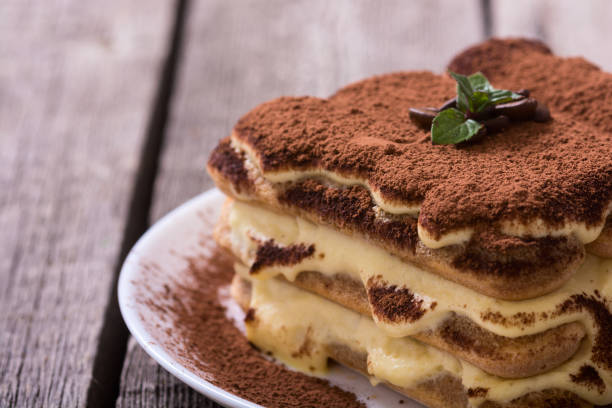

Ingrediënten voor 4 personen

5 eierdooiers
500 ml slagroom
100 gram suiker
1 citroen
1 vanillestokje
| Stap 1 | Verwarm de oven op 150 graden. |
| Stap 2 | Meng de eierdooiers en 75 gram suiker tot een mengsel. |
| Stap 3 | Verwarm de slagroom in een pannetje en voeg daarna de merg van het vanillestokje toe en de schil van de citroen. |
| Stap 4 | Laat dit geheel intrekken op laag vuur voor ongeveer 10 minuten. |
| Stap 5 | Daarna laat je het geheel afkoelen en je haalt het vanillestokje en citroenschil eruit. |
| Stap 6 | Schenk dit geheel bij de eierdooier en meng dit door elkaar. |
| Stap 7 | Vul vervolgens schaaltjes met dit mengsel en vul de ruimte op met heet water |
| Stap 8 | Bak ze in 30 minuten gaar. |
| Stap 9 | Je kunt zien dat ze goed zijn als ze niet meer vloeibaar zijn (ze mogen wel nog een beetje wiebelen). |
| Stap 10 | Zet ze minimaal 2 uur in de koelkast. |
| Stap 11 | Bestrooi ze daarna met de overgebleven suiker en brandt deze licht aan. |